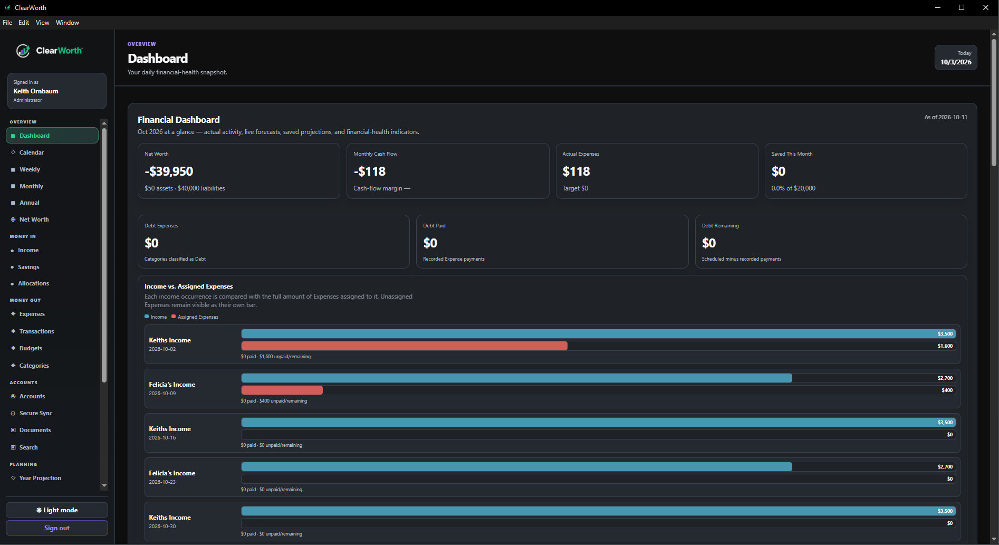
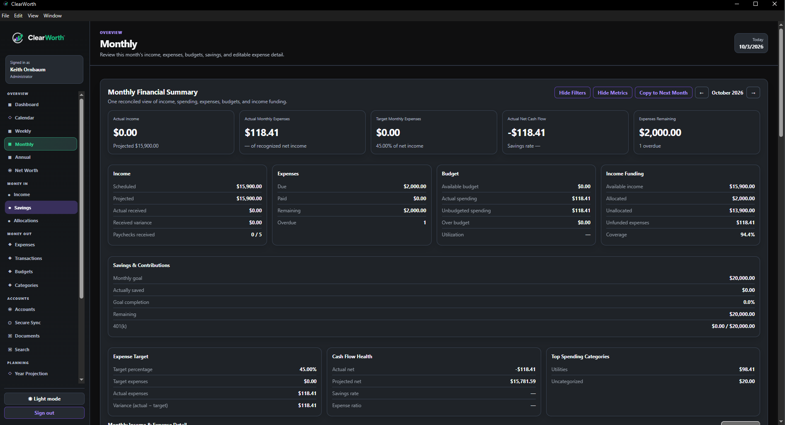
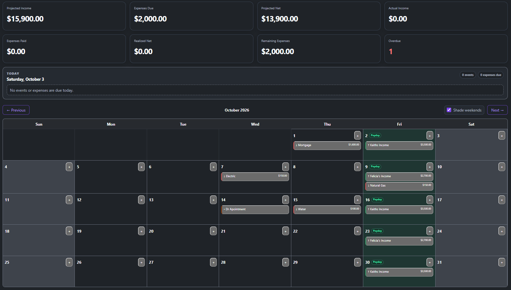
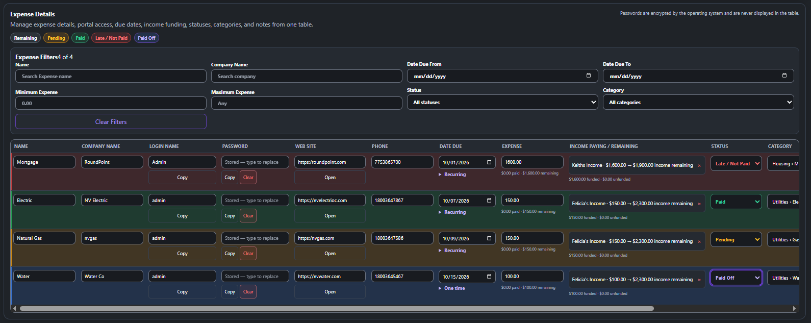
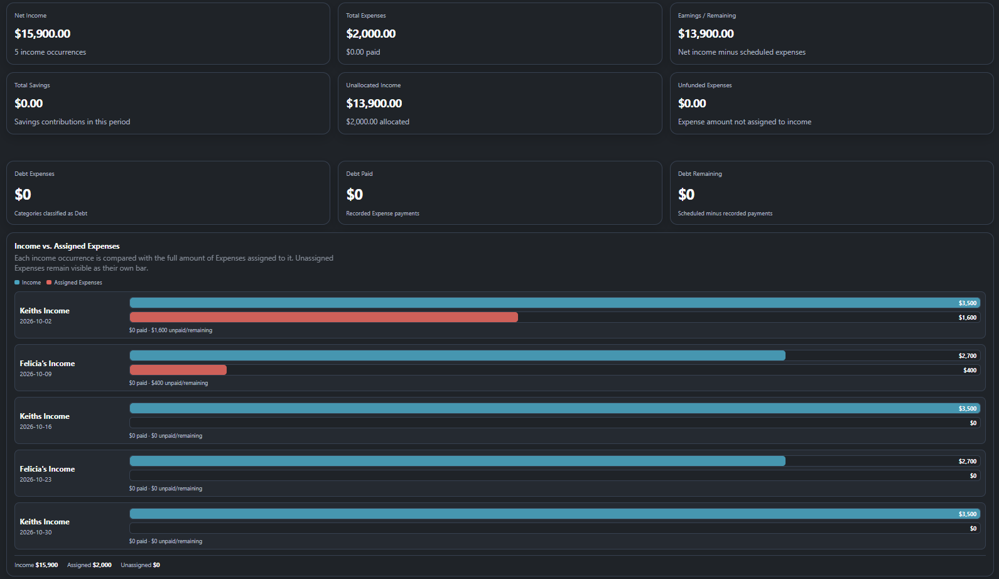
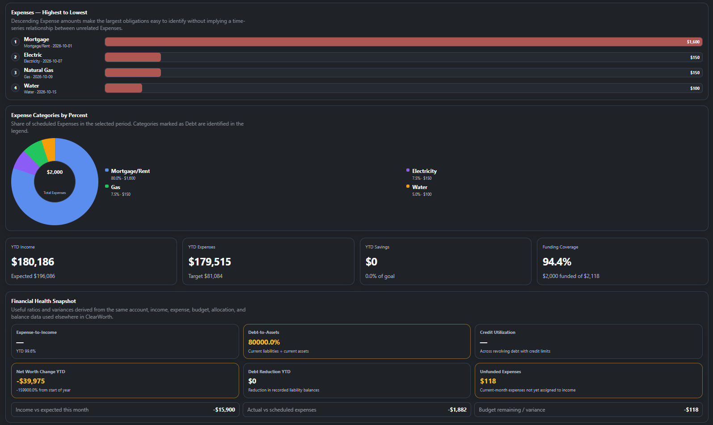
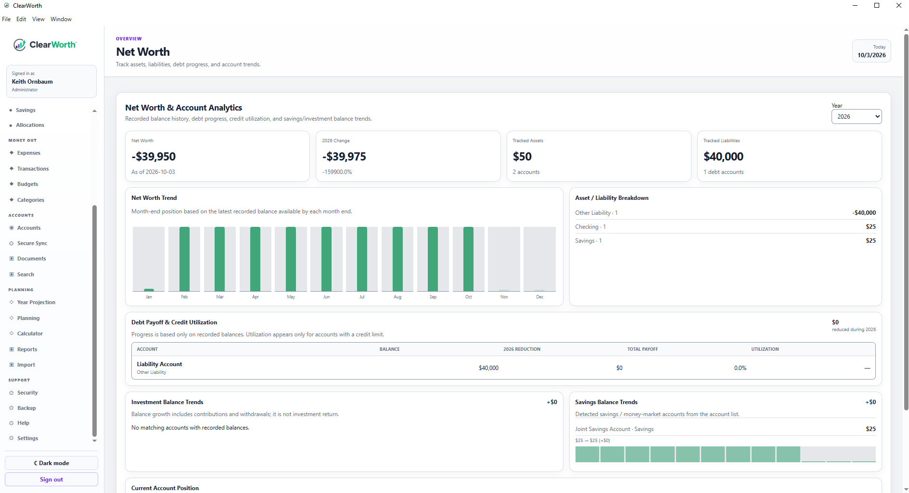
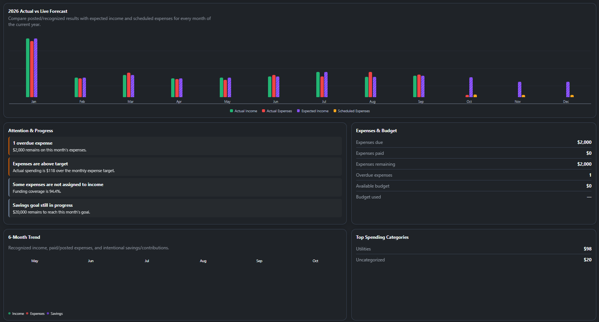
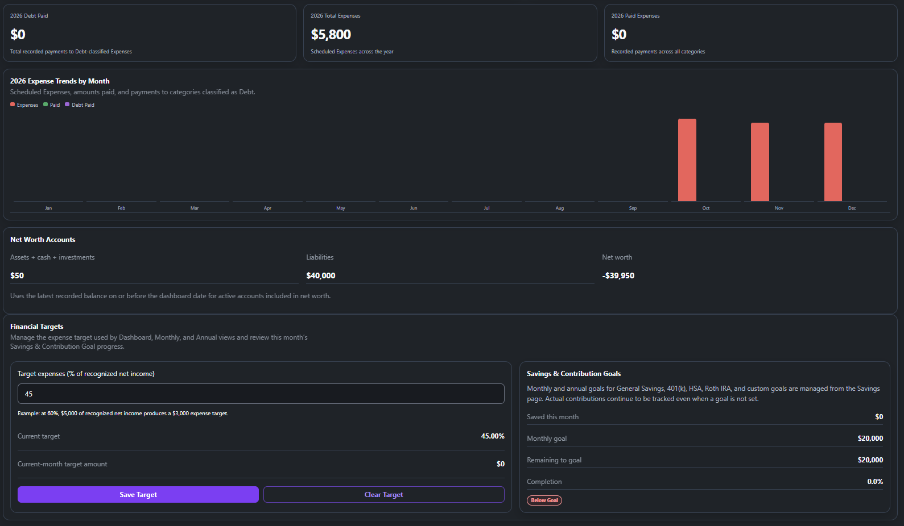
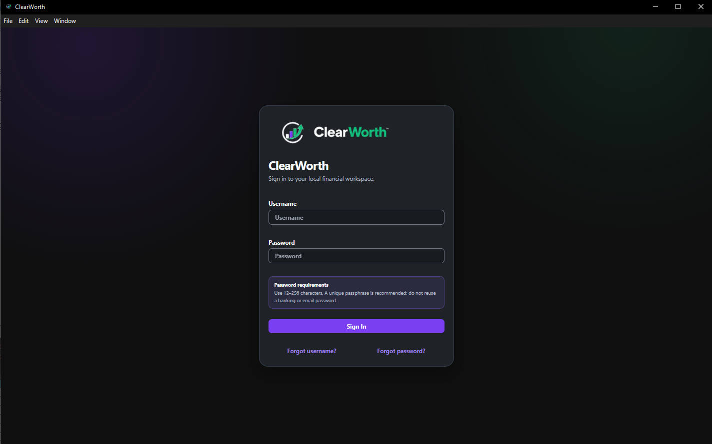

Income & expense management
Manage income sources, pay schedules, recurring expenses, due dates, categories, payment status, and partial payments.
Bring income, expenses, accounts, savings, and longer-term planning together in a local-first Windows workspace.

ClearWorth began as a self-contained personal finance application for organizing income, recurring expenses, account balances, and financial review. It combines weekly and monthly planning with annual analysis, savings goals, debt tracking, and a financial calendar.
The application is built around local data ownership. Its core workspace runs on Windows, with financial records stored in a local SQLite database. File imports and optional external integrations support the workflow.
ClearWorth is developed in phases, with testing and refinement throughout the process. The screenshots on this page show the app as captured on October 3, 2026.
Manage income sources, pay schedules, recurring expenses, due dates, categories, payment status, and partial payments.
Review income, spending, budgets, and savings by period. Filter expense details by name, company, due date, amount, status, and category.
Assign expenses to income occurrences and review funded expenses, unallocated income, and remaining obligations.
View paydays, expense due dates, and personal events in one calendar, with event colors and ICS import/export.
Record contributions, track savings goals, and set expense targets as a percentage of recognized net income.
Review account balance history, assets, liabilities, debt progress, and credit utilization for accounts with credit limits.
Compare actual activity with expected income and scheduled expenses. Explore expense rankings, category shares, and monthly trends.
Bring in financial records through CSV, OFX, and QFX file workflows, and use Excel-based import and reporting tools.
Use local sign-in and user permissions, with backup and restore tools to help manage the application's local records.
Screenshots supplied from the desktop app, showing both dark and light views. Figures and entries reflect the captured app state. Select any image to open the full-size version.









The technology below is verified against the Phase 27.3 project reference and the supplied release package's dependency declarations.
| Technology | Role in ClearWorth |
|---|---|
| Electron | Runs the Windows desktop application and connects the interface to desktop services. |
| React & React DOM | Build and render the application interface, including forms, navigation, and financial views. |
| TypeScript, TSX, JavaScript & CSS | Application logic, typed React components, runtime scripts, styling, and themes. |
| SQLite & better-sqlite3 | Store financial records locally; SQL migrations manage changes to the data structure. |
| Vite | Supports interface development and creates the production renderer build. |
| ExcelJS | Supports XLSX reports and spreadsheet import workflows. |
| Argon2 | Provides Argon2id hashing for local user passwords. |
| Nodemailer | Supports SMTP email delivery when email settings are configured. |
| electron-builder & NSIS | Package the Windows application and create its installer. |
| Node.js, npm & PowerShell | Support development, dependency management, Windows validation, and release tooling. |
The React interface communicates with desktop services through Electron's preload and IPC boundary. Database work belongs to the application layer rather than direct browser access.
The core financial database resides on the Windows installation. File imports, reports, and backup tools support local workflows; optional integrations require their own configuration.
ClearWorth combines local account controls, OS-backed secret storage, and desktop isolation. These controls are documented in the Phase 27.3 release and verified against its security documentation and source files.
Local account passwords are hashed with Argon2id. The current password policy requires 12–256 characters; account passwords are not stored in a reversibly encrypted form.
Administrators can configure failed-login lockout thresholds, lockout duration, and session timeout. Administrator password resets require a password change at the next sign-in.
Administrator, Editor, and Viewer permissions are checked in application services and privileged requests. Protected financial changes require the appropriate role, and user data is scoped by ownership.
Expense website passwords are encrypted with Electron safeStorage in the main process. Notification passwords, OAuth tokens, and webhook secrets use a separate OS-protected provider store outside the finance database.
The interface runs with context isolation and sandboxing enabled, and Node integration disabled. Privileged IPC requests validate the sender; unexpected navigation and new windows are blocked.
Recovery uses hashed, one-time challenges with a 15-minute expiry and limits on invalid attempts. Generic responses help avoid revealing whether an email address belongs to an account.
Native file dialogs issue short-lived selection tokens rather than accepting arbitrary paths from the interface. Spreadsheet processing uses an isolated utility process, resource limits, and file preflight checks; CSV exports neutralize formula-like text.
Supported email OAuth flows use Authorization Code with PKCE, S256 challenges, and state validation in the system browser. Slack and Discord webhook URLs are restricted to supported provider endpoints.
Security and recovery activity is recorded in audit logs. Administrative JSON exports omit stored password ciphertext, and full restore creates a safety snapshot with rollback if restoration fails.
Saved expense passwords are not returned to the interface. Copy Password decrypts in the main process and writes to the OS clipboard; the app attempts to clear it after 60 seconds if the copied value remains unchanged.
OS-protected secrets may depend on the Windows profile or computer. Moving data to another profile or machine may require re-entering saved credentials and provider settings.
OS-backed encryption applies to saved secrets. The project does not document whole-database or whole-backup encryption, so local financial files and backups still need appropriate Windows and storage protection.
Provider authorization and network settings remain part of integration setup. Remote ntfy connections should use HTTPS, especially when authentication is enabled.
Security controls described here reflect the inspected release. This overview does not establish a security certification or an independent penetration-test result.
When a public release is ready, this page will link to the Windows installer, release notes, and setup instructions.
This site introduces ClearWorth. The desktop application runs on Windows.
ClearWorth grew from more than a decade of technical work, continued learning, and personal and financial growth. Experience with GIS, databases, and automation shaped the approach; an interest in clearer financial planning helped turn that experience into a practical application. The broader motivation is to help others through apps and tools that support everyday people.
Read the origin story ↗